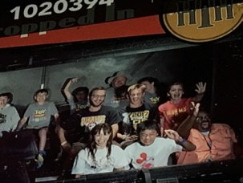

|
|
Lauren Stanick
A Little About Me!I was born in Pittsburgh, Pennsylvania on December 17, 1997. I'm a huge music and movie geek and will talk about them for hours. I'm the middle child with two brothers, awesome parents, and a sassy cat and sweet puppy. I'm a huge sports fan, and my favorite teams are the Pittsburgh Steelers, Pittsburgh Penguins, and the St. Louis Cardinals. My family is really into Disney, and my older brother is a cast member, so we go down once a summer to see the newest attactions. Below is a picture of my brothers and I on the Hollywood Tower of Terror!

|
|||